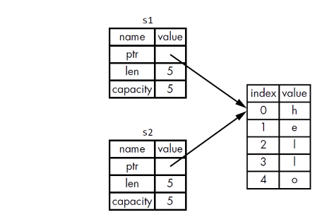
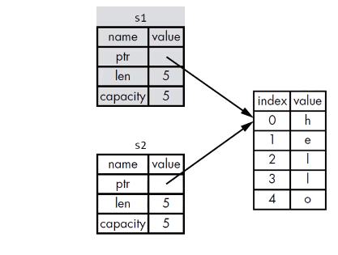
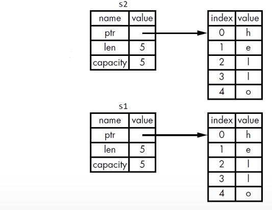
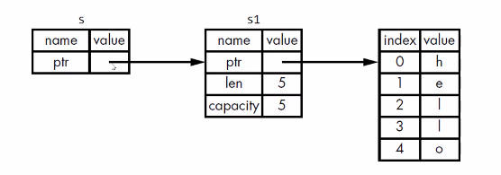
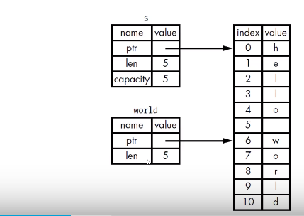

所有权是 Rust 最独特的特性，它让 Rust 无需 GC 就要可以保证内存安全
什么是所有权
- Rust 的核心特性就是所有权
- 所有程序在运行时都必须管理它们使用计算机内存的方式
- Rust 采用第三种方式
- Rust 内存是通过一个所有权系统来管理的，其中包含一组编译器在编译时检查的规则
- 当程序运行时，所有权特性不会减慢程序的运行速度
Stack vs Heap
- 在像 Rust 这样的系统编程语言里，一个值是在 stack 上还是在 heap 上对语言的行为和你为什么要做某些决定是有更大的影响的
- 在你的代码运行的时候，Stack 和 Heap 都是你可用的内存，但他们的结构很不相同
存储数据
- Stack 按值的接收顺序来存储，按相反的顺序将他们移除（后进后出 LIFO）
- 添加数据叫做压入栈
- 移除数据叫做弹出栈
- 所有存储在 Stack 上的数据必须拥有已知固定的大小
- 编译时大小未知的数据或运行时大小可用发生变化的数据必须存储在 heap 上
- Heap 内存组织性差一些
- 当你把数据放入 heap 时，你会请求一定数量的空间
- 操作系统在 heap 里找到一块足够大的空间，把它标记为在用，并返回一个指针，也就是这个空间的地址
- 把值压到 Stack 上不叫分配
- 因为指针是已知固定大小的，可以把指针存放在 stack 上
- 但如果想要实际数据，你必须使用指针来定位
- 把数据压到 stack 上要比在 heap 上分配快得多
- 因为操作系统不需要寻找存储新数据的空间，那个位置永远都在 stack 的顶端
- 在 heap 上分配空间需要做更多的工作
- 操作系统首先需要找到一个足够大的空间来存放数据，然后要做好记录方便下次分配
访问数据
访问 heap 中的数据要比访问 stack 中的数据慢，因为需要通过指针才能找到 heap 中的数据
- 对于现在处理的来说，由于缓存的缘故，如果指令在内存中跳转的次数越少，那么速度就越快
如果数据存放的距离比较近，那么处理器的处理速度就会更快一些（stack上）
如果数据之间的举例比较远，那么处理速度就会慢一些（heap上）
在 heap 存储的数据可能在分散在不同的地址上，通过指针来定位heap数据，那么要进行一个寻址的操作；如果数据存放在 stack 连续的内存上，那么直接通过一个偏移量就能拿到数据
函数调用
- 当你的代码调用函数时，值被传入到函数（也包括指向 heap 的指针）。函数本地的变量被压到 stack 上。当函数结束时，这些值会从 stack 上弹出
所有权存在的原因
- 所有权解决的问题
- 跟踪代码的那些部分正在使用 heap 的那些数据
- 最小化 heap 上的重复数据量
- 清理 heap 上未使用的数据以避免不足
- 一旦懂了所有权，那么就不需要经常去想 stack 或 heap 了
- 但是知道管理 heap 数据是所有权存在的原因，这有助于解释它为什么这样工作
所有权规则
- 每个值都有一个变量，这个变量是该值的所有者
- 每个值同时只能有一个所有者
1 | fn main() { |
当前 s 存放在栈上
String 类型
- String 比那些基础标量数据类型更复杂
- 字符串字面值：程序里手写的那些字符串值，它们是不可变的
- Rust 还有第二种字符串类型：String
创建 String 类型的值
可以使用 from 函数从字符串字面值创建出 String 类型
let s = String::from("hello");::表示 from 是 String 类型下的函数
这类字符串是可以被修改的
1
2
3
4
5fn main() {
let mut s = String::from("hello");
s.push_str(", world");
println!("{}", s);
}为什么 String 类型的值可以修改，而字符串字面值去而不能修改
- 因为它们处理内存的方式不同
内存和分配
字符串字面值，在编译时就知道它的内容了，其文本内容直接被硬编码到最终的可执行文件里
- 速度快、高效、是因为其不可变性
String 类型，为了支持可变性，需要在 heap 上分配内存来保存编译时未知的文本内容
操作系统必须在运行时来请求内存
这步通过调用 String::from 来实现
当用完 String 之后，需要使用某种方式将内存返回给操作系统
- 这步，在拥有 GC 的语言中，GC 会跟踪并清理不再使用的内存
- 没有 GC，就需要我们去是被内存何时不再使用，并调用代码将它返回
- 如果忘了，那就浪费内存
- 如果提前做了，变量就会非法
- 如果释放两次，也是 BUG，必须一次分配对应一次释放
Rust 采用不同的方式；对于某个值来说，当拥有它的变量走出作用范围时，内存会立即自动的交还给操作系统
drop 函数
变量和数据交互的方式：移动（move）
多个变量可以与同一数据使用一种独特的方式来交互
1
2let x = 5;
let y = x;line2 将 x 赋值给了 y，此时这里创建了一个 x 的副本把值赋值给了 y
整数是已知且固定大小的简单的值，这两个5被压到了 stack 中
移动：String 版本
1 | let s1 = String::from("hello"); |
一个 String 由 3 部分组成
- 指向存放字符串内容的内存指针
- 一个长度
- 一个容量
上面这些东西放在 stack 上，存放字符串内容的部分在 heap 上；长度 len，就是存放字符串内容所需的字节数；容量 capacity 是指 String 从操作系统总共获得内存的总字节数。
当把 s1 赋给 s2，String 的数据被复制了一份，在 stack 上复制了一份指针、长度、容量；并没有复制指针所指向的 heap 上的数据

当变量离开作用域时，Rust 会自动调用 drop 函数，并将变量使用的 heap 内存释放。
当 s1、s2 离开作用域时，它们都会尝试释放相同的内存，此时就会导致二次释放的（double free）Bug，可能会导致正在使用的数据损坏（第一次释放后，系统将释放后的内存分配给其它数据，如果在进行二次释放就会导致数据被擦除了），从而导致安全隐患。
Rust 为了保证内存安全，并没有尝试复制被分配的内存，而是 Rust 让 s1 失效，当 s1 离开作用域的时候，Rust 不需要释放任何东西。当 s2 创建之后，再去使用 s1 就会出现 borrow of moved value 错误
1 | let s1 = String::from("hello"); |
你也许会将赋值指针、长度、容量视为浅拷贝，但是由于 Rust 让 s1 失效了，所以我们用一个新的术语：移动（move）。当s1赋值给s2时，s1就失效了，离开作用域时，就会将 s2 给释放，从而避免了二次释放。这里隐含了一个设计原则：Rust 不会自动创建数据的深拷贝。也就是说，就运行时性能而言，任何自动赋值的操作都是廉价的。

变量和数据交互的方式：克隆（Clone）
如果真想对 heap 上面的 String 数据进行深度拷贝，而不仅仅是 stack 上的数据，可以使用 clone 方法
1 | fn main() { |
clone 方法相当于把 s1 的 stack 还是 heap 上的数据都完整的复制了一份，但是 clone 操作时比较消耗资源的。

而这种 clone 主要针对 heap 上的数据，针对 stack 上的数据则不需要 clone，直接复制就可以了。如下面例子所示，把 x 复制给 y 之后，x 与 y 都是有效的，这是因为 x 是整数类型，而整数类型在编译时就确定了自己的大小，也能将自己的数据完整的存储在 stack 中，对于这些值的复制操作永远都是非常快速的，这也同样意味着创建变量 y 之后，我们没有任何理由去阻止变量 x 继续保持有效。换句话说，对于这些类型而言深拷贝与浅拷贝并没有任何区别，调用 clone 方法并不会与直接的浅拷贝有任何的行为区别，因此我们不需要在类似的场景中考虑上述的问题。
1 | fn main() { |
Rust 提供了一个 Copy trait ，可以用于像整数这样完全存放在 stack 上面的类型，如果一个类型实现了 Copy 这个 trait，那么旧的变量在赋值后仍然可用；如果一个类型或者该类型的一部分实现了 Drop trait，那么 Rust 不允许让它再去实现 Copy trait 了，否则编译时就会报错。
拥有 Copy trait 的类型
任何简单标量的组合类型都是可以实现 Copy 的
任何需要分配内存或某种资源都不是 Copy 的
拥有 Copy trait 类型
所有的整数类型，例如 u32
bool
char
所有的浮点类型，例如 f64
Tuple（元组），如果 Tuple 所有的字段都是可以 copy 的，那么这个 tuple 也是拥有 copy trait 类型
[i32, i32] 是、[i32, String] 不是
所有权与函数
- 在语义上，将值传递给函数和把值赋给变量是类似的
- 将值传递给函数将发生移动或复制
下面例子 s 传递给了 take_ownership 函数，该 s 的所有权发生改变，此后在 main 方法中 s 处于不可用。之后将x的值传递给了 makes_copy 函数，因为 x 是一个整数类型，所以这里进行了复制的操作（传给该函数是一个 x 副本），所以 x 还是有效的。
1 | fn main() { |
返回值与作用域
函数在返回值的过程中同样也会发生所有权的转移
第2行调用了 gives_owership 函数，在该函数里面创建了一个 String，之后将 String 返回，当函数返回时，会将 some_string 作用域交由 main 函数。
第3行创建了一个 String，之后调用 takes_and_gives_back 函数将该 String 传递过去，所以 s2 的所有权发生了变化，之后在 takes_and_gives_back 函数中又将 String 返回回来，这时候就把 some_string 所有权交到 main 函数中，也就是归于 s3 进行管理，最后 main 函数执行之后就将 s1、s3 销毁（因为s2所有权已经发生变化，销毁时不需要进行任何操作）
1
2
3
4
5
6
7
8
9
10
11
12
13
14fn main() {
let s1 = gives_owership();
let s2 = String::from("hello");
let s3 = takes_and_gives_back(s2);
}
fn gives_owership() -> String {
let some_string = String::from("hello");
some_string
}
fn takes_and_gives_back(a_string: String) -> String {
a_string
}一个变量的所有权总是遵循同样的模式
- 把一个值赋给其它变量时就会发生移动
- 当一个包含 heap 数据的变量离开作用域时，它的值就会被 drop 函数清理，除非数据的所有权移动到另一个变量上了
如何让函数使用某个值，但不获得其所有权？
第2行创建了一个 String，之后调用 calculate_length 函数将 s1 传入，在该函数中获取 s1 的 length ，函数返回了一个元组存放者 s1 的长度与String，因为 length 是一个整数类型所以返回的是一个副本，而 s 是一个对象，这里返回的是所以权，最后到达了main函数，此时的 s2与len都是可用的，这种实现方式有一定的复杂性，可以通过传递引用方式来实现。
1 | fn main() { |
1 | fn main() { |
引用与借用
- 参数的类型是 &String 而不是 String
- & 符号就表示引用：允许你引用某些值而不取得其所有权

1 | fn main() { |
借用
- 我们把引用作为函数这个行为叫做借用
- 不可以修改借用的东西
- 和变量一样，引用默认也是不可变的
1 | fn main() { |
可变引用
可变引用有一个重要的限制：在特定作用域内，对某一块数据，只能有一个可变的引用
这样做的好处可以在编译时防止数据竞争
1
2
3
4
5
6
7
8// 在 main 函数中存在多个 s 的可变引用，所以报错
fn main() {
let mut s = String::from("hello");
let s1 = &mut s;
let s2 = &mut s;
println!("{}, {}", s1, s2);
}以下三种行为同时满足可能会发生数据竞争
数据竞争在运行时很难发现，所以 Rust 在编译期间就解决了这个问题，如果满足了这三种情况，那么就编译期间就会报错
- 两个或多个指针同时访问同一个数据
- 至少有一个指针用于写入数据
- 没有使用任何机制来同步对数据的访问
可以通过创建新的作用域，来允许非同时的创建多个可变引用
通过不同的作用域来创建多个可变引用；s1与s2不在同一个作用域中，s1当第5行执行完后就被销毁了
1
2
3
4
5
6
7
8fn main() {
let mut s = String::from("hello");
{
let s1 = &mut s;
}
let s2 = &mut s;
}不可以同时拥有一个可变引用和一个不变引用
因为可变引用是可以改变值的，而不变引用意味着这个值是不可变的，所以一旦允许这两个引用同时存在，可变引用把这个值改变之后，那么不变引用的作用完全失效了；如果只存在多个不变引用是可以的
1
2
3
4
5
6
7
8
9
10// 编译期间会报错
// cannot borrow 's' as mutable because it is also borrowed as immutable
fn main() {
let mut s = String::from("hello");
let r1 = &s;
let r2 = &s;
let s1 = &mut s;
println!("{} {} {}", r1, r2, s1);
}
悬空引用 Dangling References
- 悬空指针（Dangling Pointer）：一个指针引用了内存中的某个地址，而这块内存可能已经释放并分配给其他人使用了
- 在 Rust 里，编译器可保证应用永远都不是悬空引用
- 如果你引用了某些数据，编译器将保证在引用离开作用域之前不会离开作用域
下面的例子，dangle 函数返回了 String 引用，因为 Rust 执行 dangle 函数之后，s 的作用域就被销毁了，之后在返回一个 s 的引用，就会导致悬空引用发生，而 Rust 在编译期间就防止了这种情况。
1 | fn main() { |
引用的规则
- 在任何给定的时刻，只能满足下列条件之一
- 一个可变的引用
- 任意数量不可变的引用
- 引用必须一直有效
切片
- Rust 的另外一种不持有所有权的数据类型：切片（slice）
字符串切片
- 字符串切片是指向字符串中一部分的引用
- 形式：[开始索引..结束索引]
- 开始索引就是切片起始位置的索引值
- 结束索引是切片终止位置的下一个索引值

[..]指向整个字符串的切片
1 | fn main() { |
字符串字面值是切片，字符串字面值被直接存储在二进制程序中
1 | fn main() { |
将字符串切片作为参数传递，有经验的 Rust 开发者会采用 &str 作为参数类型，因为这样就可以同时接收 String 和 &str 类型的参数
1 | fn first_word(s: &String) -> &str {} |
1 | fn first_word(s: &str) -> &str {} |
- 使用字符串切片，直接调用该函数
- 使用 String，可以创建一个完整的 String 切片来调用该函数
定义函数时，使用字符串切片来代替字符串引用会使我们的 API 更加通用，且不会损失任何功能
1 | fn main() { |
其他类型切片
1 | fn main() { |